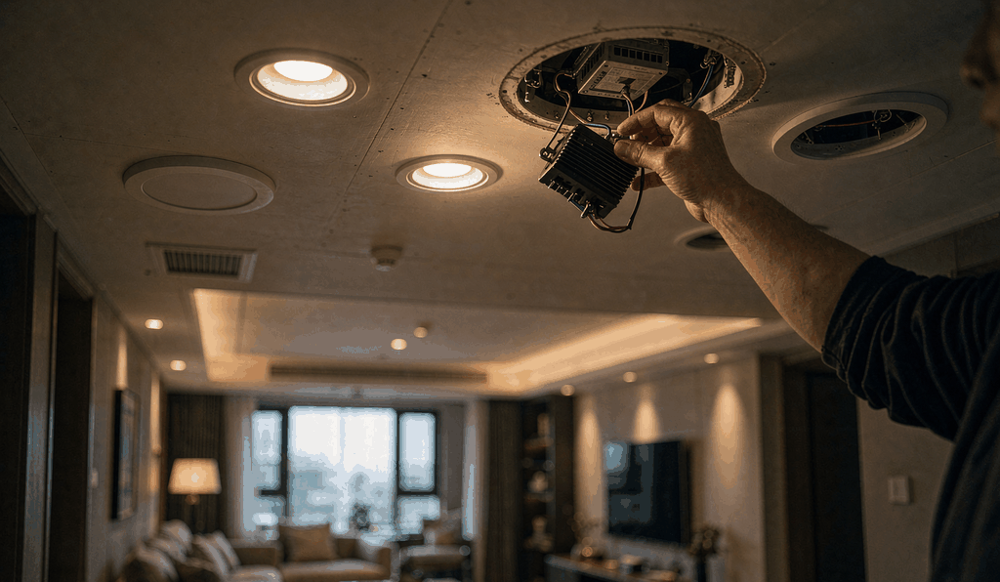
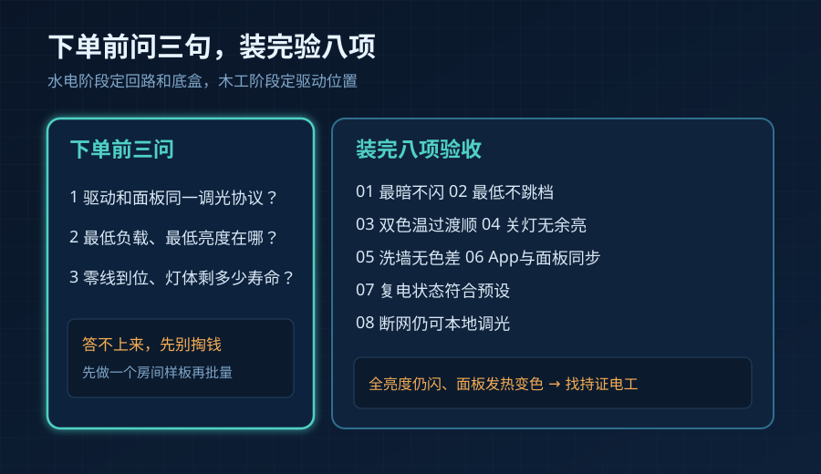

行业里常见的现场：老房翻新，吊顶不想动，灯还亮着，就是光色发灰、刺眼，晚上有点闪。业主想做智能，第一反应是换智能开关。装完才发现，灯还是只能开和关，亮暗调不了。中国家电网智能家居那篇《普通家庭升级智能照明的5种方法》，把"换灯具内部驱动模块"单列成一种玩法，说是精装房专属，不换灯不改外观，普通筒射灯能升级成可调光可联动。听着挺美，但"驱动能换"不等于"值得换"。
一、换开关没用，驱动才是那个开关
调光这件事，决定权在驱动，灯珠只是执行端。讯达康的清单说得很直白：普通灯具加智能开关，多数不能调光。智能开关管通断，不管亮度。中国家电网那篇也提了，换智能开关是老房性价比首选，但单火版有负载限制，部分小功率LED会微亮，而且只能开关，不能丝滑调色。
老刘在工地看了二十年，常见业主花在开关上的钱，最后只买回一个"手机能开关灯"。真正决定灯能不能暗下来的，是灯里那块驱动。
二、三条路怎么选

换驱动、加模块、换整灯，代价不一样。欣翻身照明讲得清楚：换驱动保留灯体，但新驱动要和灯珠参数匹配，腔体还得装得下；加无线调光模块，适合灯本身可调光、只缺控制手段；换整灯，一致性和可靠性最好。
中国家电网给的整屋改造预算区间可以参照（原文整屋口径，非单灯价格）：换驱动模块3000-6000元，换成品智能灯6000-15000元，换智能开关2000-6000元，智能灯泡50-300元。讯达康还提到，同款灯具可调光版本通常贵30%-60%。
| 路径 | 适合什么情况 | 代价与风险 |
|---|---|---|
| 换驱动 | 灯体还新，腔体装得下，参数能匹配 | 需专业电工；部分老灯不兼容；劣质驱动调光有频闪隐患 |
| 加无线调光模块 | 灯本身可调光，只缺控制手段 | 依赖原灯调光能力，改不了灯珠一致性 |
| 换整灯 | 追求一致性和可靠性 | 成本较高，要拆旧灯 |
三、下单前：先看铭牌，再看三段对不对

嘉兴维度物联网把链路拆成三段：面板输出信号（可控硅、0-10V、DALI、PWM）、驱动支持范围（最低亮度、调光曲线、频闪深度）、灯珠一致性（Ra、R9、SDCM）。三段必须对上。最暗闪、跳档，先查协议再查驱动最低负载，单换灯带没用。
看驱动外壳标识：0-10V、DALI、可控硅，或者直接写着"可调光"。欣翻身照明提醒，"dimmable"标签只是起点，灯体、驱动、控制器、回路四者都要匹配。跨品牌混用可控硅调光器和非对应驱动，容易闪烁、调光范围窄甚至不亮；很多时候换调光器比换全部驱动省。
采购单要写清：Ra≥90、R9>50（嘉兴维度口径），同空间色温统一；双色温灯带要两路输出驱动。靠调低电压让灯变暗不推荐——偏离额定工作点，效率下降，发热增加。
四、零线、灯体寿命，什么时候别改
老房开关盒里没有零线，是最大的坑。单火智能开关靠漏电流取电，小功率LED会微亮；零火更稳，但老楼常常没零线。一位业主的记录里，重新穿线让这项多花了600。
灯体用了五六年，光衰明显、色漂、故障率上升，就别改了，改完也是将就。还是这位业主的记录：最后选了Ra90以上、固定4000K、普通翘板开关，没上智能。报价从2800到15000差了五倍，实付3200，灯具约占四成，其余是驱动、面板和人工；好驱动30-60元一个，低价套餐在驱动上省，装上当时看不出，半年后闹毛病。这是一位业主的个案，不是市场均价。
五、装完怎么验收

灯装完别急着签单，按嘉兴维度那八项过一遍：
- 最暗不闪
- 最低不跳档
- 双色温过渡顺
- 关灯无余亮
- 洗墙无色差
- App与面板同步
- 复电后状态符合预设
- 断网仍可本地调光
还有一条来自英文源的提醒：调光器和智能灯泡不要混用，调光器会切断智能灯泡所需供电，导致闪烁、掉线，该换成普通开关。全亮度下仍闪、面板发热变色、大功率电器启动时全屋灯闪，都是线路问题，找持证电工。先买一只或一个房间做样板，再批量下单。
六、买前下单前三问，加三个常见疑问
下单前先问自己三句：驱动和面板是不是同一调光协议？最低负载和最低亮度在哪儿？零线到不到位、灯体还剩多少寿命？三句答不上来，先别掏钱。
问：只换驱动省多少？ 一位业主的记录里，灯具约占四成，其余是驱动、面板和人工。换驱动省的是灯体和拆装，电工钱省不掉。
问：能不能先只改一间试试？ 能。先做一个房间样板，看最暗档闪不闪、跳不跳档，再定批量。
问：水电木工阶段注意什么？ 嘉兴维度提醒，水电阶段定回路和底盒，木工阶段定驱动位置。等灯具进场才发现协议不匹配，就要拆面板或者开检修口。
调光这事，灯亮不难，难的是暗下来还稳稳当当。把驱动这一段盯住，比换什么开关都实在。